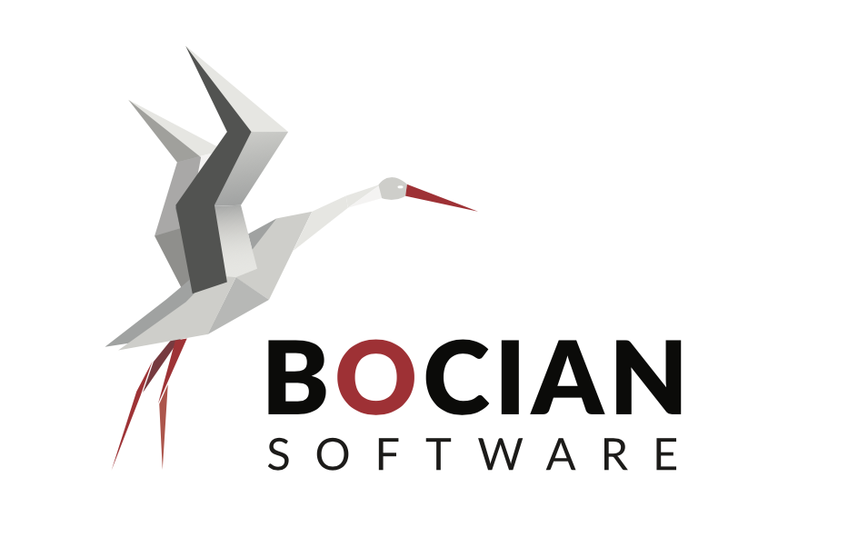

Jump to main content

Życie i dramaty
Odrodzenie
Takie tam odrodzenie
Abstract
Jam jest ten który rozpuścił się w eon
Zawartość
Zawartość
Search
Home
Zawartość
Zawartość
to jest to coś
Przesłanie
no i początek
Geneza